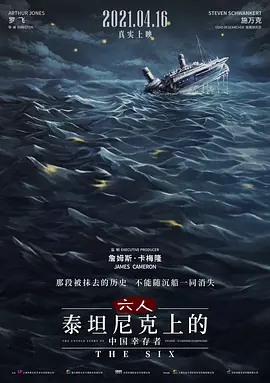

电影

六 人-泰坦尼克上的中国幸存者
The Six（2020）
中国大陆 / 纪录片 / 2021-04-16(中国大陆)上映 / 片长102分钟
想看
看过
简介
1912年4月14日泰坦尼克号沉没后几乎所有幸存者被送回至纽约港口，唯独六名中国幸存者，他们获救后在24小时之内被美国驱逐出境，他们的逃生经历几乎不被记录，甚至被刻意抹去。本片由詹姆斯·卡梅隆监制，我们将跟随调查者， 追寻这六人从人类史上最大海难中死里逃生的经历和人生轨迹，拆穿被掩盖一个世纪之久的谎言。
简介
1912年4月14日泰坦尼克号沉没后几乎所有幸存者被送回至纽约港口，唯独六名中国幸存者，他们获救后在24小时之内被美国驱逐出境，他们的逃生经历几乎不被记录，甚至被刻意抹去。本片由詹姆斯·卡梅隆监制，我们将跟随调查者， 追寻这六人从人类史上最大海难中死里逃生的经历和人生轨迹，拆穿被掩盖一个世纪之久的谎言。
首页
消息
我的